Quick start
The four jobs done most often. Each one is explained in full in the sections that follow.
Price and apply
- Factoring → Process on the customer
- Factoring Calculator → fill the deal → Calculate
- Use In Offer, then set the application to ACCEPTED and Save Status
- Start Agreement Workflow, choose Normal or Fast track
Approve the limit
- Workflow Inbox → Claim the task → Open
- Fill your step's form; add documents
- Save and Complete, Accept or Reject
- Legal's Accept creates the credit limit
Finance the invoices
- Workspace → Limits → Disbursement, enter the gross amount → Create
- Disbursements tab → Start Workflow
- Invoice Upload: load invoices and cheques, mark eligibility
- Create Claim; when paid, Save and Complete
Fund and collect
- Treasury Disburse: Suggest or enter the sources
- Save and reserve → Execute → Save and Complete
- Customer Payments: choose the claim and a payment source
- Pay Claim: the GL posts at once
About this manual
Factoring in Finova finances a customer's sales invoices. The customer (the seller) sells on credit to its own customers (the debtors); Finova advances a share of each eligible invoice and is repaid when the invoices are paid. The work runs through four areas:
| Area | Who uses it | What it does |
|---|---|---|
| Factoring | Business development, credit, risk, committee, legal | Customers, the factoring calculator, applications, the limit approval workflow and the customer's credit limit. |
| Disbursement requests | Operations | A request against the limit, its invoices and cheques, the charges and the repayment schedule. |
| Treasury | Treasury | Which money pays each disbursement: bank sublimits or own funds, checked against the bank rules, then paid and posted to the GL. |
| Collection | Collection | The customer's payments, used to pay the claims of disbursement charges. |
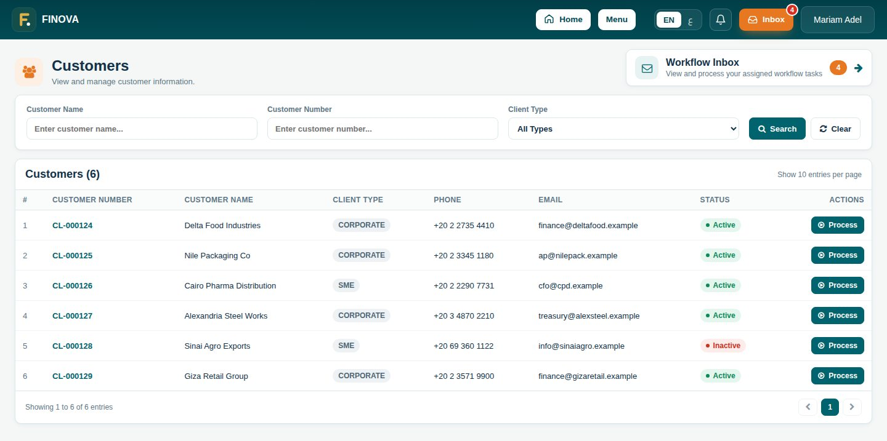
The manual follows one customer throughout, Delta Food Industries: its application for EGP 10 million, agreement APP-17, the approved limit CL-APP-17 of EGP 9 million at 85%, and disbursement DISB-2026-41. The amounts and dates are sample data.
Key concepts and the cycle
| Term | Meaning |
|---|---|
| Customer | The company that sells its invoices to Finova (the seller). Created in Customers (CRM). |
| Debtor | The customer's own buyer, who owes the invoice and pays it when due. |
| Application (offer) | A priced proposal made from the calculator, numbered OFF-yyyymmdd-nnnn. Its status is DRAFT, SUBMITTED, ACCEPTED or REJECTED, then APPLICATION once its workflow starts. |
| Agreement | Created from an accepted application when its workflow starts, numbered APP-n. Each approval step records its part on the agreement. |
| Track | The approval route chosen for each deal: Normal (nine steps) or Fast (one approval, then contract and limit). |
| Credit limit | The approved amount the customer may use, numbered CL-APP-n. Created when Legal accepts the last step. Utilized + available = approved amount. |
| Advance rate | The share of an eligible invoice that Finova finances, for example 85%. |
| Disbursement request | One financing against the limit, numbered DISB-yyyy-n, with its invoice batch, cheques, charges and repayment schedule. |
| Eligible invoice | An invoice Finova finances. An invoice marked Not Eligible needs a reason and is not financed. |
| Charges and claim | The fees of a disbursement (setup fee, commission, handling…), claimed from the customer as one claim CLM-yyyymm-n and paid in Collection. |
| GL Tran Set ID | The reference of one set of GL entries. Every posting (charges, claim payment, treasury funding) shows it. |
The cycle
Factoring Calculator → Use In Offer → ACCEPTED → Start Agreement Workflow.
Normal track: Operation Received, Sales Review, Investigation, Credit Analysis, Risk Review, Committee, Client Acceptance, Contract, Legal Review. Fast track: Approval, Contract and Limit Creation.
Legal Review: Save and Accept creates
CL-APP-n on the customer's Limits tab.From the limit: the request, then its workflow: Initiation, Invoice Upload, Treasury Disburse.
The claim of the disbursement's charges is paid from the customer's payment source.
Choose the sources, reserve, execute: the customer is paid and the GL posts.
The charges' claim must be paid before the Invoice Upload step can be completed, so step 5 comes before Treasury funds the disbursement.
Customers and the workspace
Open Factoring from the menu. The Customers list can be filtered by name, number and client type. Process (or the customer number) opens the Factoring Customer Workspace, where everything for one customer is done. The Workflow Inbox card shows how many tasks wait for you.

| Tab | What it shows | What you can do |
|---|---|---|
| Factoring Applications | Every application: amount, type, status, track, workflow step, and whether its workflow started. | Change the status and Save Status; Start Agreement Workflow (▶) on an ACCEPTED application. |
| Agreements | The agreements made from the applications, with their track and current step. | View. |
| Limits | The approved credit limits: approved, utilized and available, dates and status. | Disbursement on an active limit opens a new disbursement request. |
| Disbursements | The customer's disbursement requests, their step and the completed steps with their GL Tran Set IDs. | Edit a request not started, Start Workflow (▶), or open a completed step (view only). |
| Claims | The claims of disbursement charges: total, paid, outstanding and status. | Pay opens Customer Payments for an open claim. |
Calculator and applications
The Factoring Calculator prices a deal for the customer. Fill the four sections, press Calculate and read the Calculation Summary. The results are indicative and subject to credit approval.
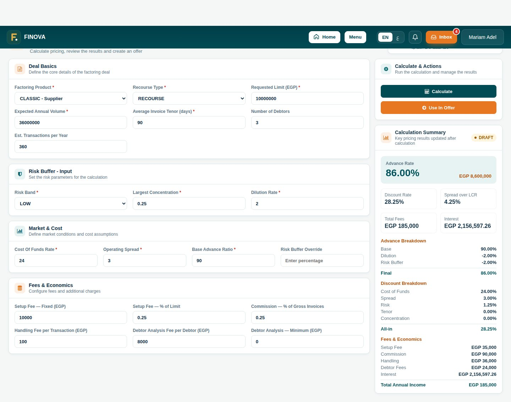
How the figures are worked out
| Result | Rule |
|---|---|
| Advance rate | Base advance ratio − dilution rate − risk buffer, never below the minimum advance of Module Settings (50% by default). The risk buffer is the override when given, else 2% (LOW), 4% (MEDIUM) or 7% (HIGH), plus 10% of the largest concentration above 25%. |
| Discount rate | Cost of funds + risk margin (1.25% LOW, 2.25% MEDIUM, 3.5% HIGH) + operating spread + 0.25% for each 30 days of average tenor above 90 + 0.5% when the largest concentration is above 25%. |
| Spread over LCR | Discount rate − cost of funds. |
| Total fees | Setup fee (fixed + % of the limit) + commission (% of the annual volume) + handling (fee × transactions per year) + debtor analysis (fee × debtors, at least the minimum). |
| Interest | Advance rate × annual volume × discount rate × average tenor ÷ 365. |
Base 90%, dilution 2%, LOW risk (buffer 2%): advance 86%. Cost of funds 24% + LOW margin 1.25% + spread 3%: discount 28.25%, spread over LCR 4.25%.
Use In Offer and the application status
- Use In Offer saves a new DRAFT application with the calculator's inputs and results. Unless Module Settings allows several open offers, a customer's open draft is loaded instead, and an offer already submitted or accepted stops a new one.
- On the Factoring Applications tab, change the status (DRAFT, SUBMITTED, ACCEPTED or REJECTED) and press Save Status (💾).
- When the application is ACCEPTED and saved, press Start Agreement Workflow (▶). Choose the track and press Start Workflow.
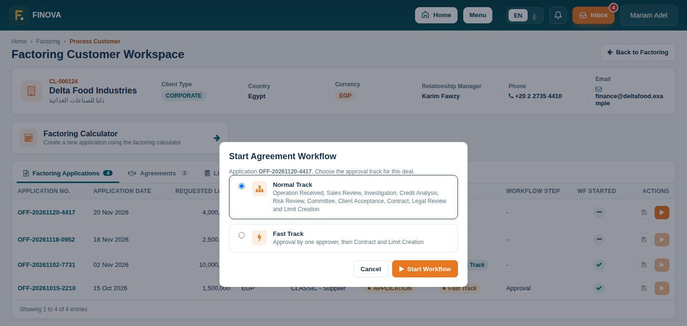
Starting creates the agreement APP-n and starts the chosen workflow in one go; the application becomes APPLICATION and its status can no longer change. The ▶ button stays disabled until the status ACCEPTED is saved, and once an agreement exists.
Working with workflow tasks
Every approval step, and every step of a disbursement request, is a task in the Workflow Inbox. A task goes to everyone in the step's role; one of them claims it.
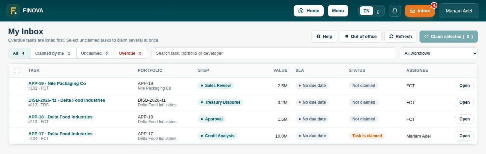
- Claim the task so it is yours (others then see who holds it).
- Open it: the step's page opens for the agreement or the disbursement.
- Fill the step's form. The page's own Save buttons keep your work without moving the workflow.
- Press the step's action: Save and Complete, Save and Accept or Save and Reject. Add a comment for the workflow history if you wish, then confirm. Your changes are saved first, then the workflow moves on and you return to the inbox.
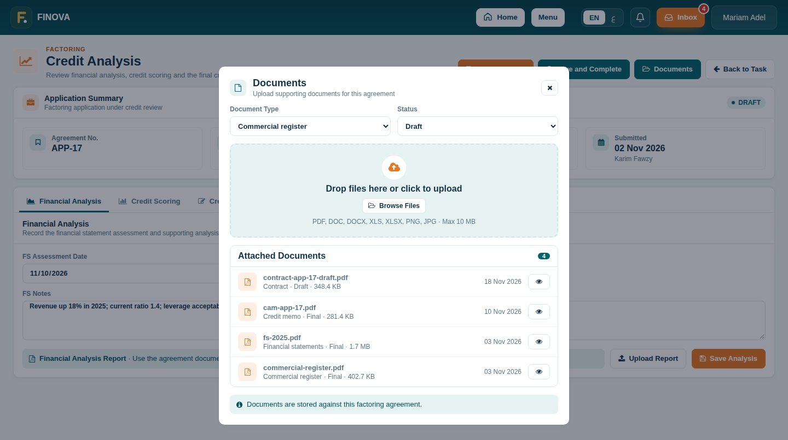
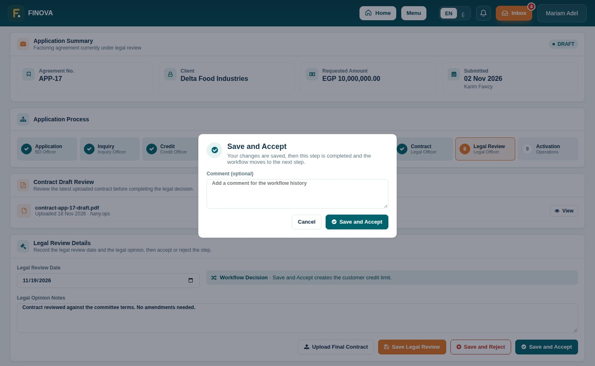
Each step page shows the Application Summary (agreement, client, requested amount, submitted date) and, from Risk Review on, the Application Process strip with the done, current and coming stages. Documents is on every step page; Back to Task returns to the task.
Limit approval: normal track
| # | Step | Role | Page | Actions |
|---|---|---|---|---|
| 1 | Operation Received | Operations officer | Agreement summary, next task assignment | Complete Task |
| 2 | Sales Review | Sales officer | Application Header Form | Complete |
| 3 | Investigation | Investigation officer | Client inquiry, AML, legal opinion, debtor inquiry | Complete |
| 4 | Credit Analysis | Credit approver | Financial analysis, credit scoring, credit memo | Complete |
| 5 | Risk Review | Risk officer | Indicators and risk notes | Accept · Reject (ends) |
| 6 | Committee Approval | Committee secretary | Committee decision: approved terms | Accept · Reject (ends) |
| 7 | Client Acceptance | Sales officer | Approved terms, signed acceptance, notes to operations | Accept · Reject (back to Committee) |
| 8 | Generate Contract | Operations officer | Contract dates and terms, contract upload | Complete |
| 9 | Legal Review and Limit Creation | Legal officer | Contract review, legal opinion | Accept (creates the limit) · Reject (ends) |
1 · Operation Received
Operations checks the new agreement. The next task (Sales Review) goes to the workflow's default role; tick Assign the next task to a specific user to give it to one sales officer for this agreement only. Add an optional completion comment and press Complete Task.
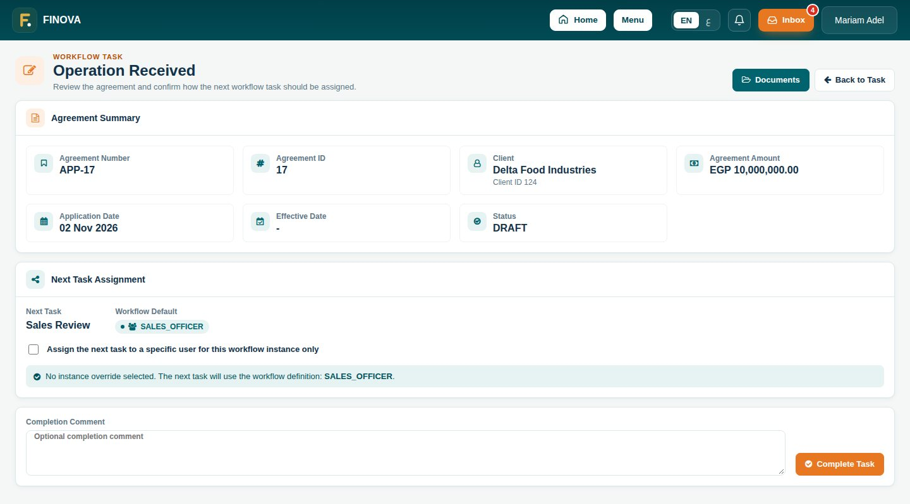
2 · Sales Review
The sales officer completes the Application Header Form: application date, client, factoring type, recourse type, facility limit, currency, advance rate, tenor in months and notes. Save Application keeps it; Save and Complete sends the agreement to Investigation.
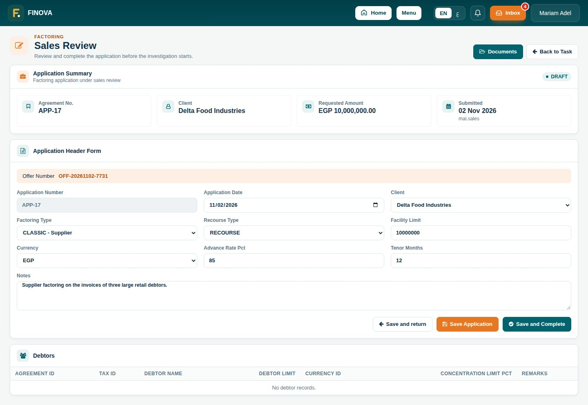
3 · Investigation
The investigation officer records three reports, each saved with its own button: the Client Inquiry Form (report date, credit bureau score, notes), the Client AML Form (date, AML risk band, result, notes) and the Legal Opinion Form. The Debtor Inquiry Results list each debtor's visit date, status, payment history and assessment.
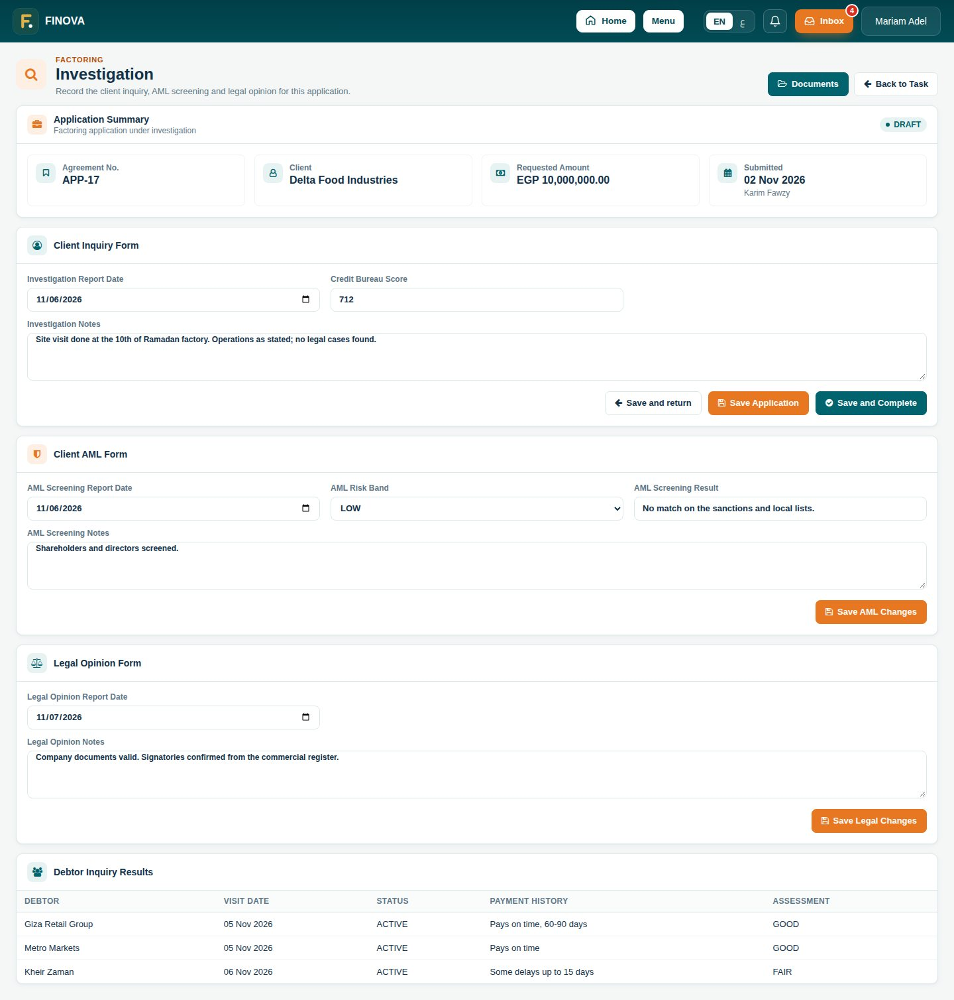
4 · Credit Analysis
Three tabs: Financial Analysis (assessment date, result Weak, Average or Strong, notes), Credit Scoring (risk rating date, result, notes) and Credit Memo (recommended limit, advance rate and tenor, and the credit notes). Each tab has its own save and report upload; Save Progress saves all three. Print Credit Memo prints the Credit Approval Memo.
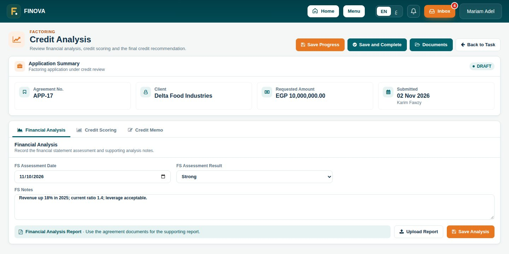
5 · Risk Review
The page shows the credit bureau score, the requested facility with recourse and tenor, and the risk grade from credit. The risk officer enters the risk memo date and notes, then Save and Accept (to the Committee) or Save and Reject, which ends the workflow.
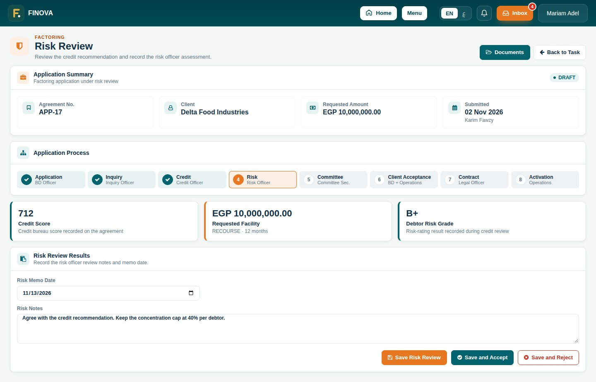
6 · Committee Approval
The committee secretary records the decision: approval date, approved limit, approved advance rate and approved tenor in months. The pre-disbursement conditions are listed below. Print Decision Letter prints the letter. Save and Accept sends the terms to the client; Save and Reject ends the workflow.
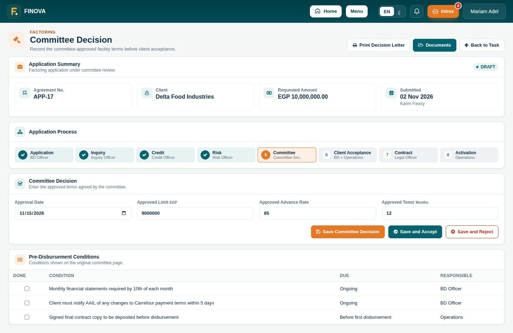
7 · Client Acceptance
The Customer Approval page shows the approved terms. Upload the client's signed acceptance (Upload Signed Acceptance), write the notes to Operations and save them (Save Client Response, or Send Contract Request). Save and Accept moves on to the contract; Save and Reject sends the deal back to the Committee, for example when the client asks for other terms.
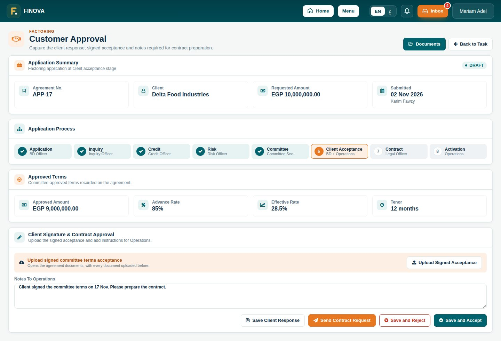
8 · Generate Contract
Operations fills the contract data: agreement number, effective date, tenor, contract start, end and sign-off dates, and additional terms and conditions. Generate Contract saves and prints the Finova Factoring Contract; Upload Contract adds the draft, final or signed contract to the documents. Save and Complete sends it to Legal.
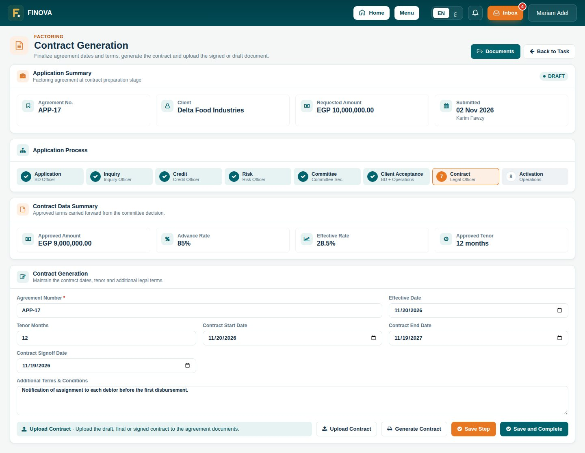
9 · Legal Review and Limit Creation
The latest uploaded contract is shown for review (View). The legal officer records the review date and the legal opinion and can upload the final contract. Save and Accept ends the workflow and creates the customer's credit limit from the approved terms. Save and Reject ends the workflow with no limit.
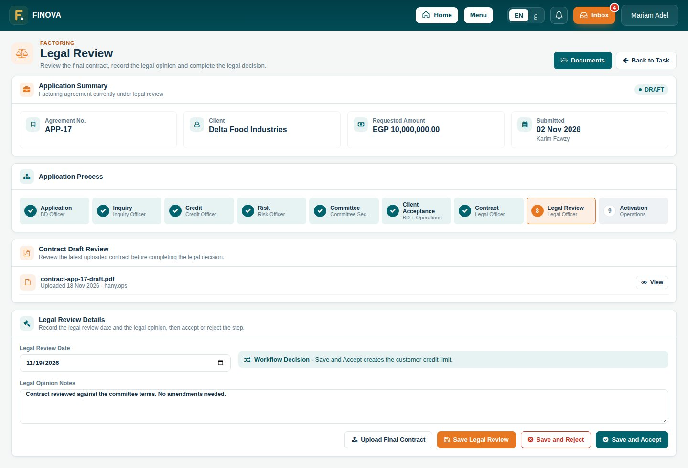
Limit approval: fast track
When the deal is started on the Fast track, the workflow has two steps only:
- Approval (fast track approver): the Approval Decision page records the approval date, approved limit, advance rate and tenor. Save and Accept sends it to the contract; Save and Reject ends it.
- Contract and Limit Creation (legal officer): the Legal Review page, where the contract is uploaded and reviewed and the legal opinion recorded. Save and Accept creates the credit limit.
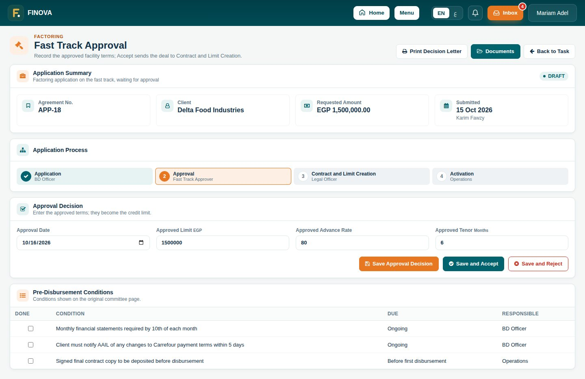
The track is chosen once, when the workflow starts, and cannot be changed for that agreement. The workspace shows each application's and agreement's track.
Agreements and the credit limit
The Agreements tab lists the customer's agreements with their facility limit, status, track and current step. When Legal accepts, the agreement's limit appears on the Limits tab, numbered CL- and the agreement number, active from the effective date to the expiry date.
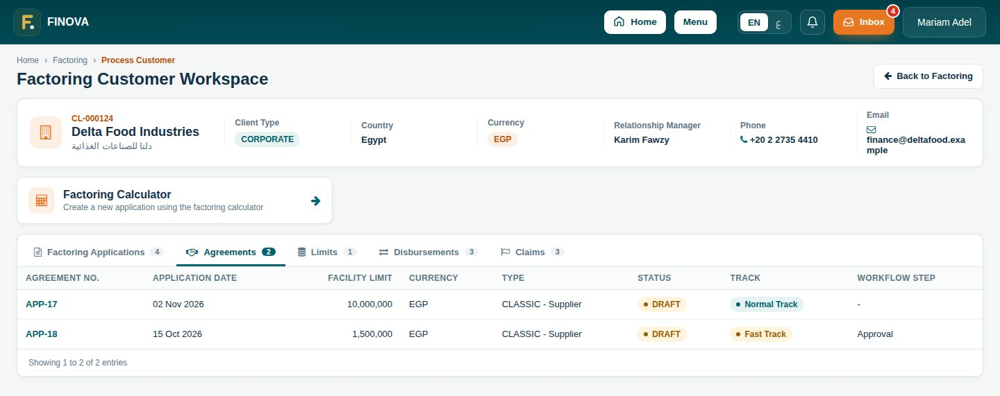
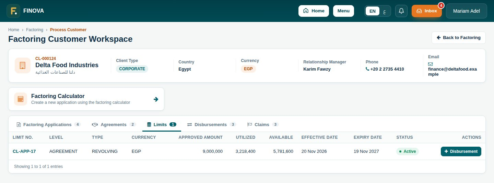
Every disbursement uses the limit; repayments free it again. An agreement has one active agreement-level limit only.
Disbursement requests
- On the Limits tab press Disbursement on the active limit. The new request shows the customer, the limit and its agreement, the facility and available limit.
- Enter the disbursement date, the invoices gross amount and remarks, then Create. The request is numbered
DISB-yyyy-n. - On the Disbursements tab, press Start Workflow (▶). From then on the request can only be viewed.
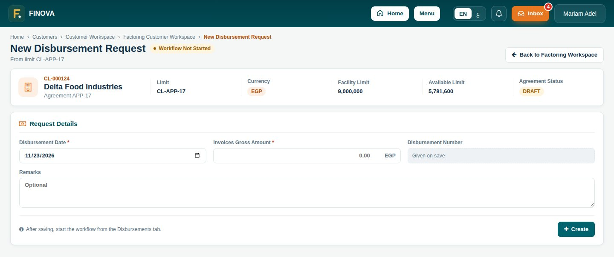
The disbursement workflow has three steps:
| Step | Role | Page |
|---|---|---|
| Initiation | Operations officer | The request; Save and Complete confirms it. |
| Invoice Upload | Operations officer | Invoice Entry & Verification (section 10). |
| Treasury Disburse | Treasury officer | Treasury Disburse (section 11). |
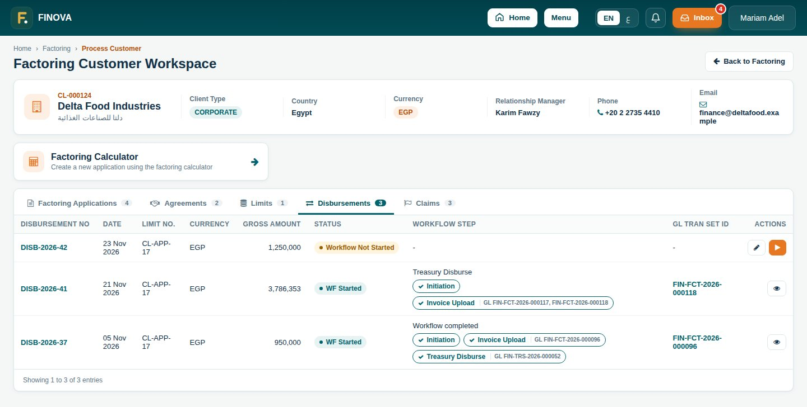
Invoice upload and verification
The Invoice Upload step opens Invoice Entry & Verification. The top shows the limit, approved and available amounts, total invoices, advance rate and utilization.
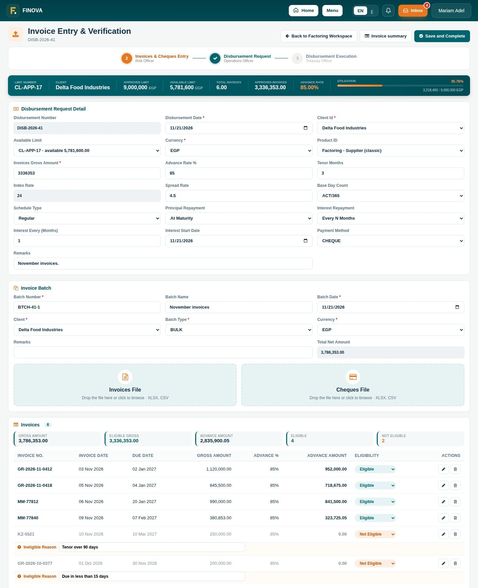
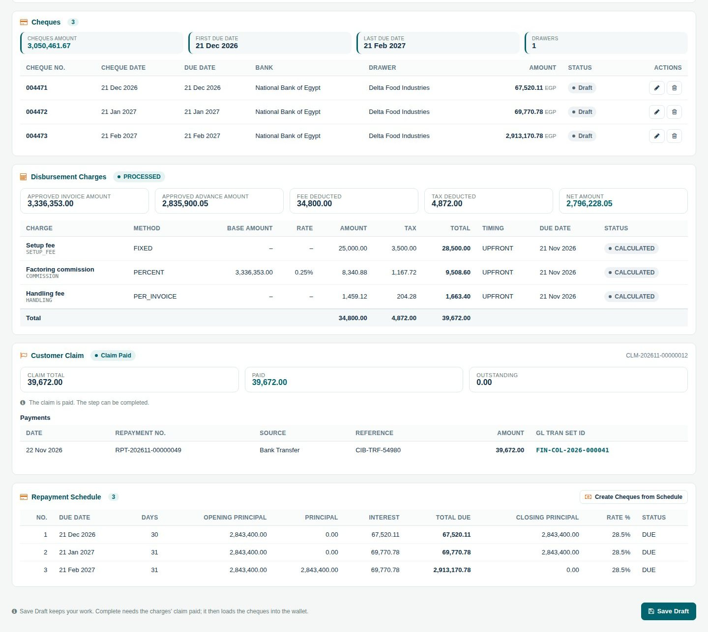
Fill the page, top to bottom
- Disbursement Request Detail: limit, currency, product, invoices gross amount (the total of the eligible invoices), advance rate from the agreement, tenor, index and spread rates, day count, and the repayment terms: schedule type (regular or irregular), principal and interest repayment and their frequency, and the payment method.
- Invoice Batch: batch name, date and type, then drop the Invoices File and the Cheques File (Excel or CSV). The rows appear as a preview; they are kept when you press Save Draft.
- Invoices: mark each invoice Eligible or Not Eligible. A not-eligible invoice needs a reason and is not financed. Eligible invoices take the advance rate.
- Cheques: the customer's cheques for the repayment schedule. Create Cheques from Schedule makes one cheque for each due date.
- Disbursement Charges: calculated from the product's rule as soon as the product is chosen: approved invoice and advance amounts, fee and tax deducted, and the net amount paid to the customer.
- Customer Claim: Create Claim claims the charges from the customer. The claim is paid in Collection (section 12). Cancel Claim is possible while nothing of it is paid.
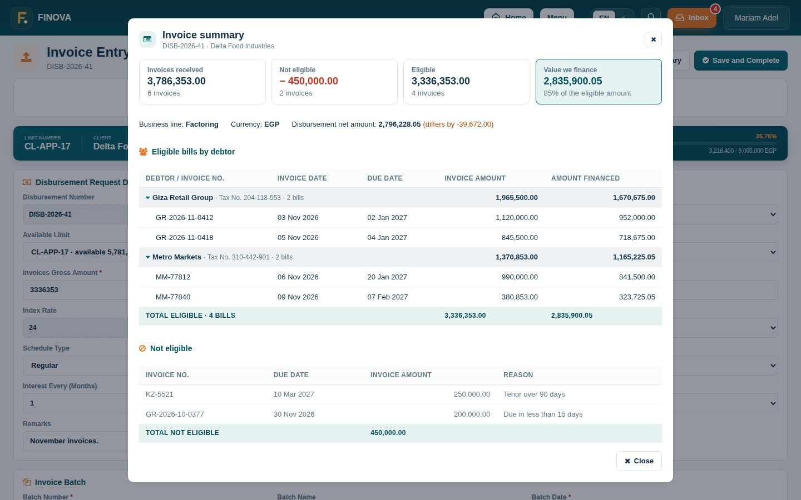
Save and Complete
Save Draft only keeps your work. Save and Complete does everything in one step, and if any part fails only the draft is kept:
- every invoice must be Eligible or Not Eligible (with a reason), and one at least Eligible;
- the charges are calculated and the repayment schedule is built;
- when there are charges, their claim must be paid;
- the cheques must match the schedule: each due date's cheques add up to its total (within 1.00), and every cheque falls on a due date;
- the cheques are loaded into the cheques wallet and their memo GL entry is posted under one GL Tran Set ID.
Treasury disburse
The Treasury officer decides which money pays the disbursement's net amount. The page guides you through four steps: choose the sources, save and reserve, execute (pay and post the GL), complete the step.
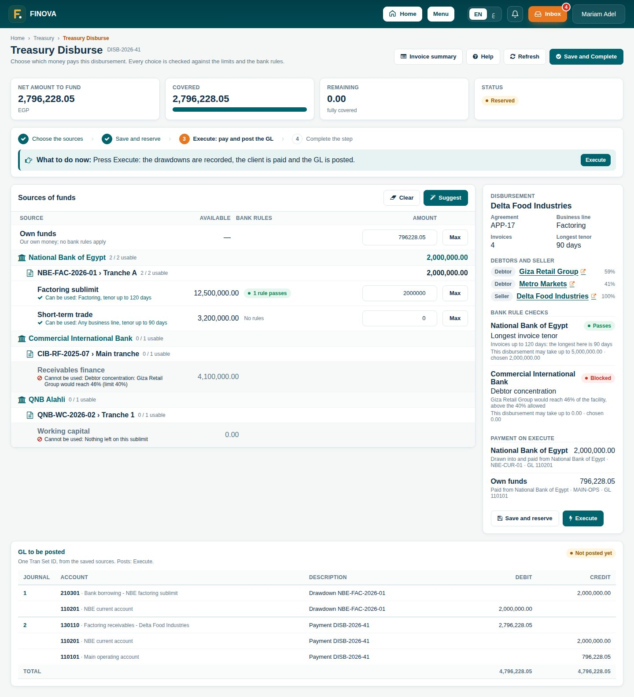
- Sources of funds: the bank limits as a tree (bank › facility › tranche › sublimit) and Own funds. Enter an amount on a sublimit, use Max for the most a line allows, or Suggest to fill them in the order set in Module Settings. A line that cannot be used says why.
- Bank rule checks run as you type: a rule passes, warns, or blocks (a blocked line must move to another source). A rule that allows an override needs a reason, and a second user presses Approve override.
- Save and reserve keeps the choice and reserves the amounts. The side panel shows the debtors and the seller (with their invoices and bank account) and how each line will be paid.
- Execute pays the customer and posts the GL under one GL Tran Set ID. In reverse factoring, the suppliers are paid instead: tick Confirmed as the bank confirms each transfer; the GL posts when the last one is confirmed.
- Save and Complete ends the disbursement workflow.
Claims and customer payments
The customer's payment (for example a bank transfer recorded in Collection) becomes a payment source. Collection uses it to pay the claim of the disbursement's charges.
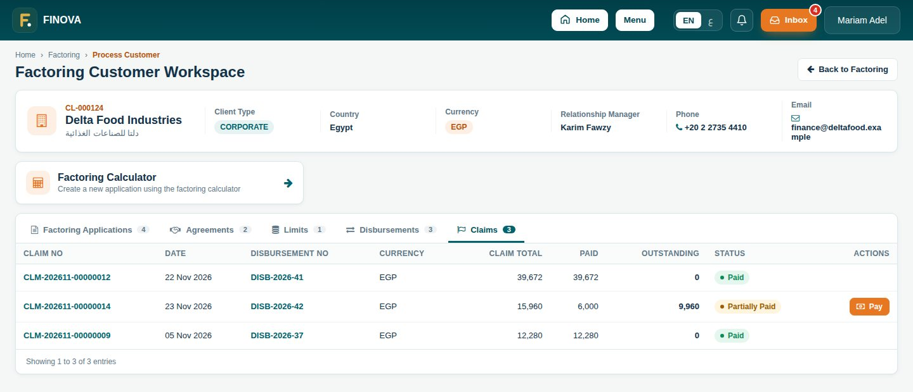
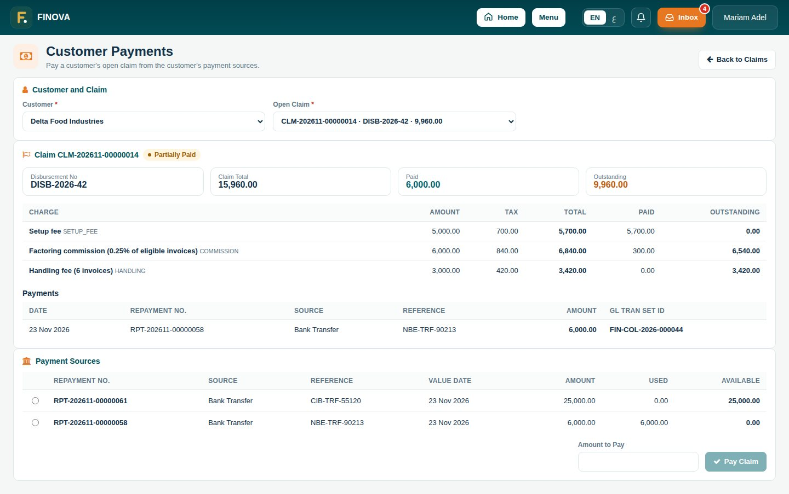
- Press Pay on the claim (or open Collection → Customer Payments and choose the customer and the open claim).
- Choose a payment source with balance left and enter the amount to pay (empty pays all it can).
- Pay Claim. The claim's lines are paid in order, and the GL entries post under their own GL Tran Set ID.
A claim is OPEN, PARTIALLY PAID, PAID or CANCELLED. When it is PAID, the Invoice Upload step can be completed.
Roles, statuses, questions
Roles
| Role | Does |
|---|---|
| Business development (FCT.EDIT) | Calculator, Use In Offer, application status, Start Agreement Workflow. |
| Operations officer | Operation Received, Generate Contract; disbursement Initiation and Invoice Upload (CRM.EDIT). |
| Sales officer | Sales Review, Client Acceptance. |
| Investigation officer · Credit approver · Risk officer | Investigation · Credit Analysis · Risk Review. |
| Committee secretary · Fast track approver | Committee Approval · fast track Approval. |
| Legal officer | Legal Review and Limit Creation (both tracks). |
| Treasury officer | Treasury Disburse; another Treasury user approves overrides. |
| Collection (COLLECTION.EDIT) | Customer Payments: pay claims. |
Statuses
| Item | Statuses |
|---|---|
| Application | DRAFT → SUBMITTED → ACCEPTED (or REJECTED) → APPLICATION when the workflow starts |
| Agreement | Its progress is the workflow step shown with it; the step is empty once the workflow has ended |
| Disbursement request | Workflow Not Started → WF Started (step shown) → Workflow completed |
| Treasury funding | None → Reserved → Executed |
| Claim | OPEN → PARTIALLY PAID → PAID, or CANCELLED |
Questions
| Question | Answer |
|---|---|
| Start Agreement Workflow is greyed out. | Set the status to ACCEPTED and press Save Status first. It is also disabled once the agreement exists. |
| Use In Offer loaded an old draft. | The customer already has an open draft. Work on it, or ask for Module Settings to allow several open offers. |
| I cannot see the task. | It is in the inbox of the step's role. If another user claimed it, they hold it. |
| The customer has no Disbursement button. | There is no active limit yet: the Legal Review step has not been accepted. |
| Invoice Upload will not complete. | Check: every invoice marked, one eligible, the claim paid, and the cheques matching each due date of the schedule. The message lists what is missing. |
| A source of funds shows Blocked. | A bank rule or the sublimit's balance stops it. Move the amount to another sublimit or to own funds. |
Finova · Factoring User Manual · Version 1.0 · November 2026